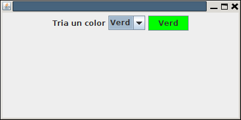

4.6.- JComboBox
La llista desplegable, o quadre combinat (combinació d'un quadre de text i un llista) és un component molt útil per a seleccionar una entre moltes opcions que es poden mostrar en la llista desplegable associada al component.
La única dificultat radica en omplir aquesta llista. Una de les maneres és omplir-la passant-li la llista en un Array de Strings en el moment de crear el JComboBox
val llista = arrayOf("Opció 1","Opció 2","Opció 3","Opció 4")
val combo = JComboBox(llista)
Una forma alternativa seria crear primer el JComboBox i després anar afegint elements amb el mètode addItem(). El mateix exemple d'abans quedaria:
val combo = JComboBox<Any>()
combo.addItem("Opció 1")
combo.addItem("Opció 2")
combo.addItem("Opció 3")
combo.addItem("Opció 4")
Per a registrar l'acció de quan seleccionem un element de la llista, la registrarem amb mètode addListener(), per exemple posant una lambda amb les accions.
Normalment haurem de saber quin és l'element de la llista seleccionat, que sabrem amb getSelectedItem(), o el número d'ordre també ens serà útil en ocasions, i el sabrem amb getSelectedIndex()
En el següent exemple mostrem un quadre combinat amb 4 opcions corresponents a 4 colors. Quan es tria un color, canviem el color de fons d'un botó situat al costat, i obtenim l'element selseccionat amb getSelectedItem()
class Finestra : JFrame() {
init {
defaultCloseOperation = JFrame.EXIT_ON_CLOSE
setTitle("Exemple de JComboBox")
setSize(400, 300)
setLayout(FlowLayout())
add(JLabel("Tria un color"))
val llista = arrayOf("Roig","Blau","Verd","Groc")
val combo = JComboBox(llista)
add(combo)
val boto1 = JButton("Color")
add(boto1)
combo.addActionListener{
when(combo.getSelectedItem()){
"Roig" -> boto1.setBackground(Color.red)
"Blau" -> boto1.setBackground(Color.blue)
"Verd" -> boto1.setBackground(Color.green)
"Groc" -> boto1.setBackground(Color.yellow)
}
}
combo.setSelectedIndex(0)
}
}Podríem haver utilitzat getSelectedIndex() per a sabar l'índex seleccionat. El when ens hauria quedat així:
combo.addActionListener{
when(combo.getSelectedIndex()){
0 -> boto1.setBackground(Color.red)
1 -> boto1.setBackground(Color.blue)
2 -> boto1.setBackground(Color.green)
3 -> boto1.setBackground(Color.yellow)
}
}
Llicenciat sota la Llicència Creative Commons Reconeixement NoComercial SenseObraDerivada 2.5